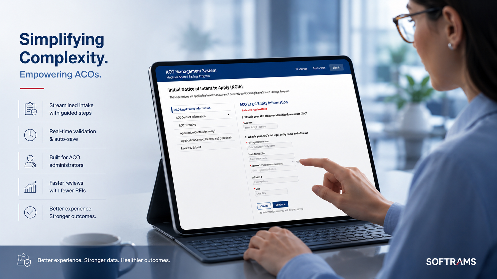
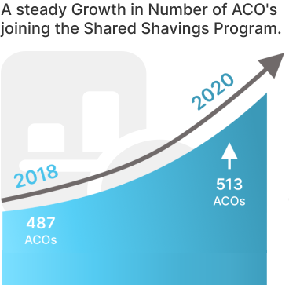
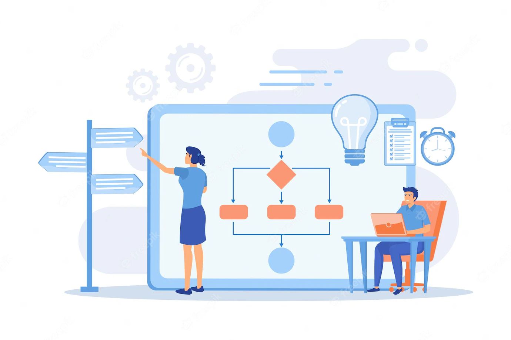

Lead UX designer for the Medicare Shared Savings Program -a federal CMS platform supporting 500+ ACO organizations, enabling $1.2B in Medicare savings through better design and usability.

The Shared Savings Program encourages groups of doctors, hospitals, and providers to come together as ACOs -giving coordinated, high-quality care to Medicare beneficiaries. Administered by CMS, under the US Department of Health and Human Services.
The Shared Savings Program had grown significantly, supporting nearly 513 ACO organizations. Existing workflows were outdated, creating friction for users trying to meet compliance and reporting requirements that changed annually.

The Shared Savings Program's scope grew dramatically, demanding a system that could support annual requirement changes for nearly 513 ACO organizations. Outdated workflows created friction for administrators and healthcare providers trying to meet compliance and reporting needs.
A full experience redesign to create a seamless, intuitive user flow meeting the growing needs of program administrators, ACO leaders, and healthcare providers -reducing friction at every compliance and reporting touchpoint.
Working as lead UX at Softrams, I owned the end-to-end design process -stakeholder research, user flows, wireframes, prototypes, and development handoff -across multiple product iterations over nearly three years.
Understanding the scale and problem space across 500+ organizations.

Mapping improved task flows across the platform.
The product is actively used by 500+ ACO organizations and 11M+ beneficiaries.
Visit acoms.cms.gov ↗According to CMS 2022 performance results, there was significant growth: 66 new enrollments, 140 renewals, and over 11 million beneficiaries receiving care -a 3% growth of 324K compared to the prior year. In 2019, users saved $1.2 billion in Medicare, up from $739M the year prior.